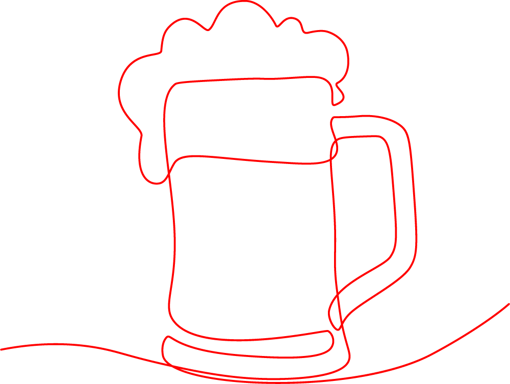

Kaart van Bruine Kroegen

Op deze kaart zijn de door Stichting De Bruine Kroeg geselecteerde traditionele cafés weergegeven. U kunt in- en uitzoomen van Nederland tot op straatniveau. Klik op een markering voor meer informatie of om het café in de lijst te bekijken.